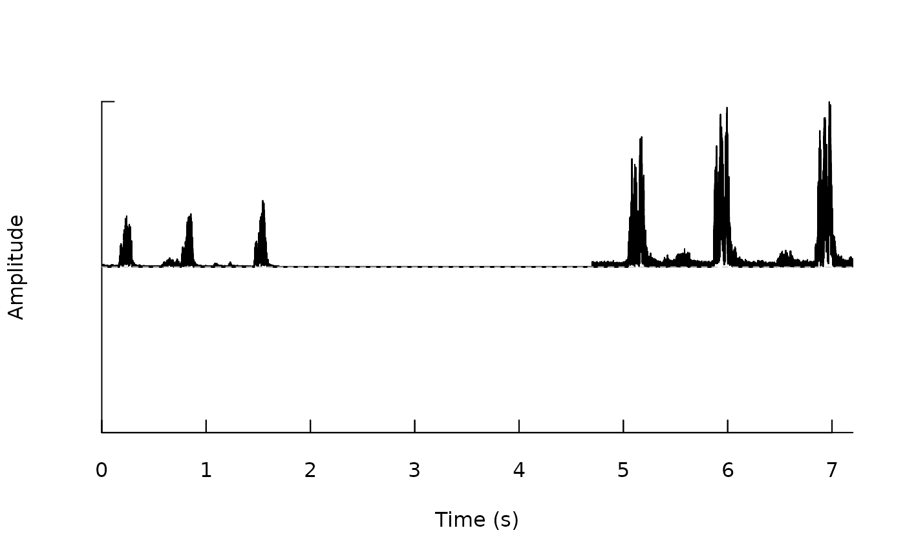

remove_silence Removes silences in wave files
Usage
remove_silence(
path = NULL,
min.sil.dur = 2,
img = TRUE,
it = "jpeg",
flim = NULL,
files = NULL,
parallel = 1,
pb = TRUE,
downsample = TRUE
)Arguments
- path
Character string containing the directory path where the sound files are located. If
NULL(default) then the current working directory is used.- min.sil.dur
Numeric. Controls the minimum duration of silence segments that would be removed.
- img
Logical argument. If
FALSE, image files are not produced. Default isTRUE.- it
A character vector of length 1 giving the image type to be used. Currently only "tiff" and "jpeg" are admitted. Default is "jpeg".
- flim
A numeric vector of length 2 indicating the highest and lowest frequency limits (kHz) of the spectrogram as in
spectro. Default isNULL. Ignored if `img = FALSE`.- files
character vector or factor indicating the subset of files that will be analyzed. If not provided then all wave files in the working directory (or path) will be processed.
- parallel
Numeric. Controls whether parallel computing is applied. It specifies the number of cores to be used. Default is 1 (i.e. no parallel computing).
- pb
Logical argument to control progress bar and messages. Default is
TRUE.- downsample
Logical indicating whether files are downsampled to a 5000 kHz sampling rate. This can be used to speed up the process, but will make the function ignore sound/noise above 2500 kHz. Default is
TRUE.
Value
Sound files for which silence segments have been removed are saved in the new folder "silence-removed_files" in .wav format. If `img = TRUE` then spectrogram images highlighting the silence segments that were removed are also saved.
Details
The function removes silence segments (i.e. segments with very low amplitude values) from wave files.
References
Araya-Salas, M., & Smith-Vidaurre, G. (2017). warbleR: An R package to streamline analysis of animal acoustic signals. Methods in Ecology and Evolution, 8(2), 184-191.
Author
Marcelo Araya-Salas (marcelo.araya@ucr.ac.cr)
Examples
{
# save sound file examples
data(list = c("Phae.long1", "Phae.long2","lbh_selec_table"))
sil <- silence(samp.rate = 22500, duration = 3, xunit = "time")
wv1 <- pastew(pastew(Phae.long1, sil, f = 22500, output = "Wave"),
Phae.long2, f = 22500, output = "Wave")
#check silence in between amplitude peaks
env(wv1)
#save wave file
writeWave(object = wv1, filename = file.path(tempdir(), "wv1.wav"),
extensible = FALSE)
#remove silence
# remove_silence(files = "wv1.wav", pb = FALSE, path = tempdir())
#check this floder
tempdir()
}

#> [1] "/tmp/RtmpHsiO1P"